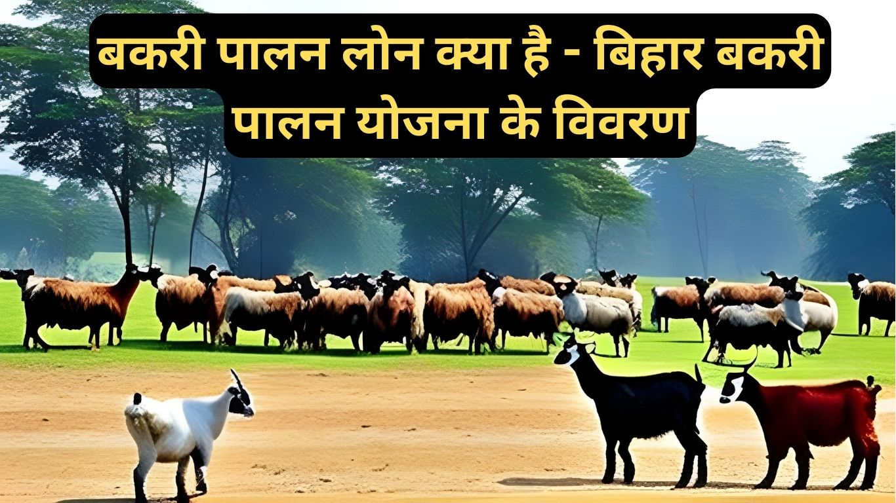

बकरी पालन एक लाभकारी व्यवसाय है जो अच्छी मुनाफे के साथ साथ किसानों को आर्थिक सहायता भी प्रदान करता है। यह व्यवसाय अधिकांश लोगों के लिए उचित हो सकता है क्योंकि यह आसानी से संचालित किया जा सकता है और इसमें निवेश भी कम होता है। बिहार सरकार ने बकरी पालन को बढ़ावा देने के लिए बिहार बकरी पालन योजना की शुरुआत की है, जिसमें उचित ऋण(Loan) भी प्रदान किया जाता है। इस लेख में हम Bakari Palan Loan Yojana के बारे में विस्तृत जानकारी देने वालें है ।
बकरी पालन Loan क्या है?
बकरी पालन Loan एक वित्तीय सहायता योजना है जो किसानों और व्यापारियों को बकरी पालन व्यवसाय की शुरुआत के लिए आर्थिक सहायता प्रदान करती है। यह Loan किसानों को उनके बकरी फार्म की स्थापना, प्रबंधन, और विकास में मदद करने के लिए प्रदान किया जाता है। बकरी पालन Loan से किसानों को आवश्यक संसाधनों की व्यवस्था, खर्चों का भुगतान, और बकरियों की देखभाल के लिए आर्थिक सहायता मिलती है। इससे बकरी पालन व्यवसाय की सफलता बढ़ती है और किसानों को आर्थिक मजबूती प्राप्त होती है।
बकरी फार्म खोलने पर दी जाने वाली अनुदान राशि
बिहार बकरी पालन योजना के तहत बकरी फार्म खोलने के लिए सरकार द्वारा प्रदान की जाने वाली अनुदान राशि का विवरण यहाँ दिया गया है। यह अनुदान बकरी पालन क्षेत्र में रोजगार को बढ़ाने और किसानों को आर्थिक सहायता प्रदान करने के उद्देश्य से शुरू की गई है। यदि आप बकरी फार्म खोलने का सोच रहे हैं, तो आपको इस योजना के बारे में अधिक जानकारी होनी चाहिए। आइए इस लेख में हम इस योजना के बारे में विस्तार से जानते हैं।
- PostOffice se Loan kaise Milta hai
- Rupee On- Personal Loans कैसे मिलेगा?
- Marksheet se loan kaise liya jata hai
बकरी फार्म की क्षमता और अनुदान की राशि
बकरी फार्म की क्षमता निर्धारित करने के लिए, आपको यह जानना आवश्यक है कि योजना कितनी बकरियों के लिए अनुदान प्रदान करेगी। नीचे दिए गए तालिका में विभिन्न श्रेणियों के लिए बकरी फार्म की क्षमता और अनुमानित लागत राशि दी गई है:
| श्रेणी | बकरी फार्म की क्षमता | अनुमानित लागत राशि | अनुदान | अधिकतम अनुदान की राशि |
| सामान्य जाति | 20 बकरी+1 बकरा | 2 लाख रुपए | 50% | 1 लाख रुपए |
| अनुसूचित जाति | 20 बकरी+1 बकरा | 2 लाख रुपए | 60% | 1 लाख रुपए |
| अनुसूचित जनजाति | 20 बकरी+1 बकरा | 2 लाख रुपए | 60% | 1 लाख रुपए |
सामान्य जाति (General)
- बकरी फार्म की क्षमता: 20 बकरी+1 बकरा
- अनुमानित लागत राशि: 2 लाख रुपए
- अनुदान: 50%
- अधिकतम अनुदान की राशि: 1 लाख रुपए
अनुसूचित जाति (SC)
- बकरी फार्म की क्षमता: 20 बकरी+1 बकरा
- अनुमानित लागत राशि: 2 लाख रुपए
- अनुदान: 60%
- अधिकतम अनुदान की राशि: 1 लाख रुपए
अनुसूचित जनजाति (ST)
- बकरी फार्म की क्षमता: 20 बकरी+1 बकरा
- अनुमानित लागत राशि: 2 लाख रुपए
- अनुदान: 60%
- अधिकतम अनुदान की राशि: 1 लाख रुपए
इस प्रकार, अनुदान की राशि आपकी बकरी फार्म की क्षमता और श्रेणी के आधार पर निर्धारित की जाएगी। यह अनुदान आपको आर्थिक मदद प्रदान करने के लिए है ताकि आप अपने बकरी फार्म को सफलतापूर्वक चला सकें।

बकरी पालन लोन के लिए Bihar Goat Farm भूमि और राशि विवरण
{kind=link}
इस योजना के तहत, आपको बकरी पालन के लिए उपयुक्त भूमि का चयन करना होगा ।
सामान्य जाति
- बकरी फार्म की क्षमता: 20 बकरी+1 बकरा से 40 बकरी+2 बकरा
- आवेदक की स्वयं लागत: 48,000 रुपए से 96,000 रुपए
- बैंक ऋण: 20,000 रुपए से 40,000 रुपए
- भूमि की आवश्यकता: 1800 वर्ग मीटर से 3600 वर्ग मीटर
अनुसूचित जाति
- बकरी फार्म की क्षमता: 20 बकरी+1 बकरा से 40 बकरी+1 बकरा
- आवेदक की स्वयं लागत: 48,000 रुपए से 96,000 रुपए
- बैंक ऋण: 20,000 रुपए से 40,000 रुपए
- भूमि की आवश्यकता: 1800 वर्ग मीटर से 3600 वर्ग मीटर
अनुसूचित जनजाति
- बकरी फार्म की क्षमता: 20 बकरी+1 बकरा से 40 बकरी+1 बकरा
- आवेदक की स्वयं लागत: 60,000 रुपए से 1,20,000 रुपए
- बैंक ऋण: 20,000 रुपए से 40,000 रुपए
- भूमि की आवश्यकता: 1800 वर्ग मीटर से 3600 वर्ग मीटर
बिहार बकरी पालन Loan योजना की विशेषताएँ
बिहार बकरी पालन योजना को 2023 में शुरू किया गया है। यह योजना बकरी पालन को प्रोत्साहित करने और किसानों को आर्थिक सहायता प्रदान करने के उद्देश्य से शुरू की गई है। इस योजना के तहत बकरी पालन के लिए उचित Loan उपलब्ध है जिससे किसान अपने व्यापार को बढ़ा सकते हैं। यह योजना कई विशेषताओं के साथ आती है, जिनमें से कुछ निम्नलिखित हैं:
1. आसान Loan प्राप्ति
बिहार बकरी पालन योजना के तहत, बकरी पालन करने वाले किसानों को आसानी से Loan प्राप्त करने का मौका मिलता है। इस योजना द्वारा निर्धारित Loan दर और शर्तों के अनुसार, किसान बैंकों या वित्तीय संस्थाओं द्वारा आसानी से Loan प्राप्त कर सकते हैं।
2. वित्तीय सहायता
बिहार बकरी पालन योजना के तहत, बकरी पालन करने वाले किसानों को वित्तीय सहायता प्रदान की जाती है। यह योजना उचित Loan के माध्यम से उन्हें उचित प्रशिक्षण और उपकरण प्रदान करने के लिए आर्थिक सहायता प्रदान करती है, जिससे उनके बकरी पालन व्यवसाय को मजबूती मिलती है।
3. व्यापार सहायता
यह योजना बकरी पालन के लिए Loan प्रदान करके व्यापारियों को व्यापार सहायता प्रदान करती है। बकरी पालन करने वालों को बकरी पालन व्यवसाय में नए तकनीकी उपयोग, पशु चिकित्सा सेवाएं, और बाजार में उत्पादों को बेचने के लिए सही मार्गदर्शन जैसी सहायता प्राप्त होती है।
बकरी पालन Loan का ब्याज दर
बकरी पालन Loan का Interest Rate योजना के निर्माता द्वारा निर्धारित की जाती है। यह Interest Rate आवेदक के Loan के मूल्य, उपयोग की अवधि, और Loan की प्रकृति पर निर्भर कर सकती है। बकरी पालन Loan का Interest Rate आमतौर पर वित्तीय संस्था या बैंक द्वारा निर्धारित की जाती है और इसे आवेदक को Loan की मान्यता प्राप्त करने के समय बताया जाता है। Interest Rate आपके Loan के भुगतान पर लगाया जाने वाला एक आवंटन है जिसे आपको ब्याज के साथ Loan की राशि वापस करनी होती है। बकरी पालन Loan का Interest Rate वित्तीय संस्था या बैंक के नियमानुसार विभिन्न आवेदकों के लिए अलग-अलग हो सकती है।
बकरी पालन लोन के लिए आवेदन कैसे करें ?
बकरी पालन लोन प्राप्त करने के लिए निम्नलिखित चरणों का पालन करें:
- आधिकारिक वेबसाइट पर जाएं: बिहार सरकार की आधिकारिक वेबसाइट पर जाएं और बकरी पालन योजना के बारे में विस्तृत जानकारी प्राप्त करें।-https://state.bihar.gov.in/

- आवेदन पत्र डाउनलोड करें: वेबसाइट से आवेदन पत्र डाउनलोड करें और अद्यतनित जानकारी के साथ उसे भरें। Download Bakri-Palan-Loan-Application-Form-PDF
- दस्तावेजों को संलग्न करें: आवेदन पत्र के साथ आवश्यक दस्तावेजों की प्रतिलिपि संलग्न करें, जैसे पहचान प्रमाणपत्र, पता प्रमाण पत्र, आय प्रमाण पत्र, और व्यापारिक निवेश से संबंधित कोई अन्य दस्तावेज।
- स्वीकृति और Loan अनुदान: आपके द्वारा संलग्न किए गए दस्तावेजों की समीक्षा के बाद, आपका आवेदन स्वीकृति प्राप्त करेगा और आपको Loan की अनुमति दी जा सकती है।
बिहार बकरी पालन योजना के लाभ
बिहार बकरी पालन योजना के अंतर्गत वित्तीय सहायता प्राप्त करने के कई लाभ हैं। इस योजना के तहत किसानों को निम्नलिखित लाभ प्राप्त करने का अवसर मिलता है:
1. आर्थिक सहायता
बिहार सरकार बकरी पालन योजना के तहत किसानों को आर्थिक सहायता प्रदान करती है। इस योजना के द्वारा, किसान बकरी पालन के लिए आवश्यक सामग्री खरीदने, बकरियों की देखभाल करने और पशुओं की चिकित्सा सेवाएं प्राप्त करने के लिए वित्तीय सहायता प्राप्त कर सकते हैं। यह उनके लिए एक मुद्रण अवसर होता है जो उनकी आर्थिक स्थिति को सुधार सकता है।
2. रोजगार का माध्यम
बकरी पालन योजना के अंतर्गत बकरी पालन का व्यवसाय शुरू करने से बेरोजगार युवाओं को रोजगार का एक बहुत अच्छा माध्यम मिलता है। इस व्यवसाय में कम निवेश के साथ आर्थिक स्वतंत्रता प्राप्त की जा सकती है और उच्च मानकों के साथ मुनाफा कमाया जा सकता है। यह उन लोगों के लिए एक बेहतरीन मौका है जो स्वयं का व्यवसाय शुरू करने की इच्छा रखते हैं।
3. पशु आरोग्य सुरक्षा
बिहार बकरी पालन योजना उन नए किसानों को समर्पित है जो पशु आरोग्य और चिकित्सा सेवाओं की व्यापकता के बारे में जागरूक होना चाहते हैं। यह योजना उन्हें बकरियों की व्यापक चिकित्सा सेवाओं और आवश्यक टीकाकरण की सुविधा प्रदान करती है। इससे पशुओं के रोगों से बचाव किया जा सकता है और पशु आरोग्य में सुधार किया जा सकता है।
4. आत्मनिर्भरता
बकरी पालन योजना बिहार सरकार द्वारा स्वतंत्रता और आत्मनिर्भरता को बढ़ावा देने का एक अच्छा माध्यम है। यह योजना व्यापारियों को उचित Loan प्रदान करके उन्हें अपने व्यापार को आगे बढ़ाने के लिए आवश्यक संसाधन प्रदान करती है।
बिहार बकरी पालन योजना के लिए दस्तावेज
बिहार बकरी पालन योजना के लिए निम्नलिखित दस्तावेजों की आवश्यकता होती है:
- पहचान प्रमाणपत्र: आवेदक की पहचान प्रमाणित करने के लिए आधार कार्ड, पैन कार्ड, वोटर आईडी कार्ड, या जन्म प्रमाणपत्र जैसा कोई मान्यता प्राप्त दस्तावेज।
- पता प्रमाण पत्र: आवेदक का स्थायी पता प्रमाणित करने के लिए बिजली का बिल, पानी का बिल, गैस कनेक्शन सत्यापन पत्र, या आवास प्रमाणपत्र जैसा कोई मान्यता प्राप्त दस्तावेज।
- आय प्रमाण पत्र: आवेदक की वार्षिक आय का सत्यापन करने के लिए आय प्रमाणपत्र, किसान क्रेडिट कार्ड, या आयकर रिटर्न (आईटीआर) जैसा कोई मान्यता प्राप्त दस्तावेज।
- बैंक खाता विवरण: बैंक खाता विवरण के रूप में आवेदक के पास अपने बैंक खाते का पासबुक, चेकबुक, या बैंक का पत्र होना चाहिए।
- बकरी पालन के लिए किसी भी अन्य आवश्यक दस्तावेज: अपने व्यवसाय की प्रमाणित प्रतिलिपि, बकरी पालन के लिए आवश्यक व्यापारिक योजना, अनुमानित खर्च आदि को सत्यापित करने के लिए आवेदक के पास किसी भी अतिरिक्त दस्तावेज की आवश्यकता हो सकती है।
बिहार बकरी पालन योजना के लिए चयन प्रक्रिया
बिहार बकरी पालन योजना के लिए चयन प्रक्रिया निम्नलिखित हो सकती है:
- आवेदन पत्र जमा करना: आवेदकों को बकरी पालन योजना के लिए ऑनलाइन या ऑफ़लाइन आवेदन पत्र जमा करना होता है। आवेदन पत्र में आवेदक की व्यक्तिगत और व्यापारिक जानकारी को सही ढंग से भरना आवश्यक होता है।
- दस्तावेज सत्यापन: आवेदकों के द्वारा सबमिट किए गए दस्तावेजों की सत्यापन प्रक्रिया होती है। यह सत्यापन ज़िला कार्यालय में होती है।
- योजना के लिए योग्यता की जांच: आवेदकों की योग्यता की जांच की जाती है, जैसे कि उनकी आय स्तर, बकरी पालन का व्यापारिक योग्यता, और अन्य योग्यता मापदंडों के आधार पर।
- Loan की स्वीकृति और अनुदान: यदि आवेदक योग्य होता है, तो उन्हें बकरी पालन योजना के लिए Loan और अनुदान प्रदान किया जाता है। Loan की राशि और अनुदान की शर्तें योजना के नियमानुसार होती हैं।
बिहार बकरी पालन योजना के लिए पात्रता और नियम
बिहार बकरी पालन योजना के लिए पात्रता और नियमों की जानकारी निम्नलिखित है:
- नागरिकता: योजना के लिए पात्र होने के लिए आवेदक को भारतीय नागरिक होना चाहिए।
- आय सीमा: आवेदक की पारिवारिक आय किसी तरह के नौकरी से नहीं आ रही हो कहने का मतलब है आवेदक विलकुल वेरोजगार होना चाहिए ।
- व्यापारिक योग्यता: बकरी पालन व्यवसाय में रुचि रखने वाले आवेदकों को व्यापारिक योग्यता होनी चाहिए।
- अन्य नियम: अन्य नियम और शर्तें योजना के निर्माता द्वारा निर्धारित की जाती हैं। आवेदकों को योजना के निर्माता द्वारा निर्धारित दस्तावेज प्रस्तुत करने की आवश्यकता हो सकती है और उन्हें सभी नियमों और शर्तों का पालन करना होगा।
- ख़ाली भूमि – आवेदक के पास 1800 से 3600 वर्ग फीट के ख़ाली भूमि होना चाहिए जहां वो बकरी पालन कर सके ।
- आवेदक के पास 20 बकरी+1बकरा / 40 बकरी+2 बकरा अवश्य होनी चाहिए तभी जाकर बकरी पालन के लिए सब्सिडी मिलेगा ।
बकरी फार्म का निर्माण और अनुदान राशि का भुगतान
बकरी फार्म का निर्माण करने पर बिहार बकरी पालन योजना के अनुसार आपको निर्धारित अनुदान राशि का भुगतान करना होगा। यह राशि योजना के निर्माता द्वारा स्थापित नियमों के अनुसार होगी। आपको निर्धारित समय पर राशि का भुगतान करना होगा ताकि आप अपने बकरी फार्म की संरचना और संचालन को सुचारू रूप से कर सकें।
बकरी पालन योजना के लिए आवेदन कैसे करें
बिहार बकरी पालन योजना के लिए आवेदन करने के लिए निम्नलिखित कदमों का पालन करें:
- आवेदन पत्र भरें: बकरी पालन योजना के लिए आवेदन पत्र भरें और आवश्यक दस्तावेज संलग्न करें।
- दस्तावेज सत्यापन: अपनी पहचान प्रमाणित करने के लिए आवश्यक दस्तावेजों की प्रमाणित प्रतियाँ सत्यापित करें।
- सबमिट करें: पूर्ण आवेदन पत्र और दस्तावेजों के साथ अपने स्थानीय पशुपालन कार्यालय में जमा करें।
- जाँच करें: आपका आवेदन समीक्षा के लिए जमा किया जाएगा और आपको एक प्राप्ति स्लिप दी जाएगी।
- अनुदान प्राप्त करें: यदि आपका आवेदन स्वीकार होता है, तो आपको बकरी पालन योजना के अंतर्गत वित्तीय सहायता प्राप्त होगी।
अंतिम विचार
बकरी पालन व्यवसाय बिहार बकरी पालन योजना के तहत एक आर्थिक और सामाजिक मौका है। यह योजना उचित Loan प्रदान करके बकरी पालन कर्मियों को व्यापार में मदद करती है और उन्हें आर्थिक स्थिरता प्रदान करती है। इसके अलावा, इस योजना से रोजगार के अवसर भी सृजित होते हैं और ग्रामीण क्षेत्रों में आर्थिक विकास को बढ़ावा मिलता है।
अगर आप बकरी पालन व्यवसाय के लिए Loan की आवश्यकता है, तो बिहार बकरी पालन योजना आपके लिए उचित विकल्प साबित हो सकती है। इसलिए, जल्दी से जल्दी आवेदन करें और इस योजना से लाभ उठाएं!
अक्सर पूछे जाने वाले प्रश्न (FAQs)
बकरी पालन योजना किसे प्राथमिकता मिलती है?
ग्रामीण क्षेत्र के छोटे किसानों और व्यापारियों को मिलती है।
बकरी पालन योजना के लिए आवेदन करने के लिए कौन-कौन से दस्तावेज जरूरी हैं?
प्रमाणपत्र, पता प्रमाण पत्र, आय प्रमाण पत्र, और व्यापारिक निवेश से संबंधित कोई अन्य दस्तावेज संलग्न करने की आवश्यकता हो सकती है।
Loan की मुद्रा क्या होती है?
बकरी पालन योजना के तहत प्रदान की जाने वाली Loan की मुद्रा योजना के निर्देशानुसार निर्धारित की जाती है।
Loan की वापसी के लिए कितना समय होता है?
Loan की वापसी के समय और शर्तें योजना के निर्माता द्वारा निर्धारित की जाती हैं। आपको आवेदन पत्र में इसके बारे में जानकारी मिलेगी।
बकरी पालन योजना का उद्देश्य क्या है?
बकरी पालन योजना का उद्देश्य बकरी पालन व्यवसाय को प्रोत्साहित करना और किसानों को आर्थिक सहायता प्रदान करना है।